Uma plataforma pensada para facilitar a busca por alimentos, considerando diferentes necessidades e preferências alimentares.
Horário de acesso: 00:00:00
Conheça o projeto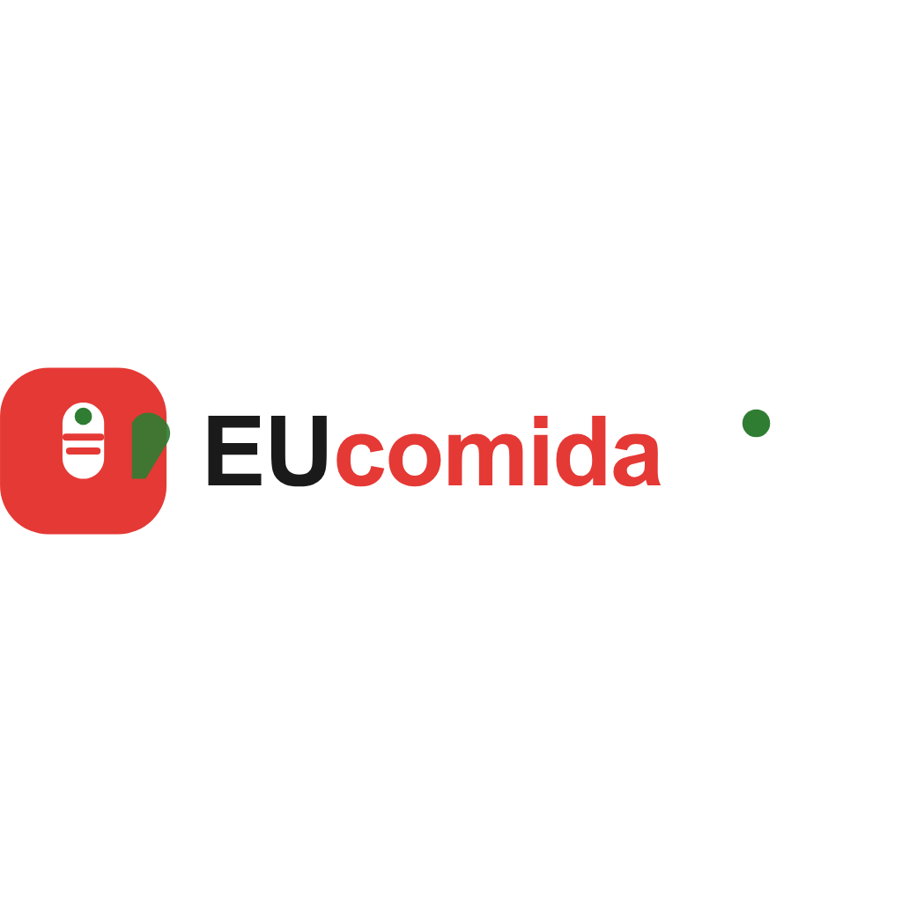
O EUcomida é um projeto desenvolvido na disciplina de Interface Humano-Computador (IHC), com a proposta de facilitar a busca e a escolha de alimentos.
A plataforma considera pessoas com restrições alimentares e também aquelas que desejam conhecer novas opções de comidas.
O desenvolvimento do projeto utiliza conceitos de Design Thinking, buscando compreender as necessidades dos usuários e desenvolver uma solução adequada.
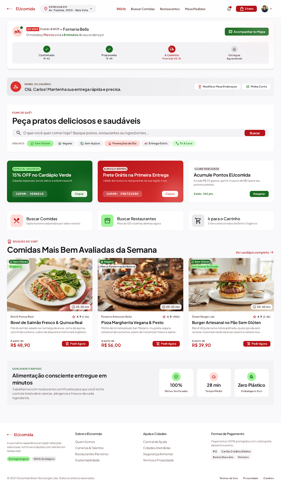
Conheça as etapas utilizadas no desenvolvimento do EUcomida.
Identificação do problema e compreensão das necessidades dos usuários.
Organização das informações e definição do problema que será resolvido.
Desenvolvimento de ideias e organização das funcionalidades da solução.
Construção e apresentação dos protótipos de baixa ou média fidelidade.
Ver etapaAvaliação da usabilidade, análise dos resultados e aplicação de recursos de acessibilidade.
Ver etapaNesta etapa, foi identificado o problema que motivou o desenvolvimento do EUcomida, considerando as dificuldades enfrentadas pelos usuários na busca por alimentos.
Espaço destinado à apresentação das pesquisas realizadas para compreender as necessidades dos usuários.
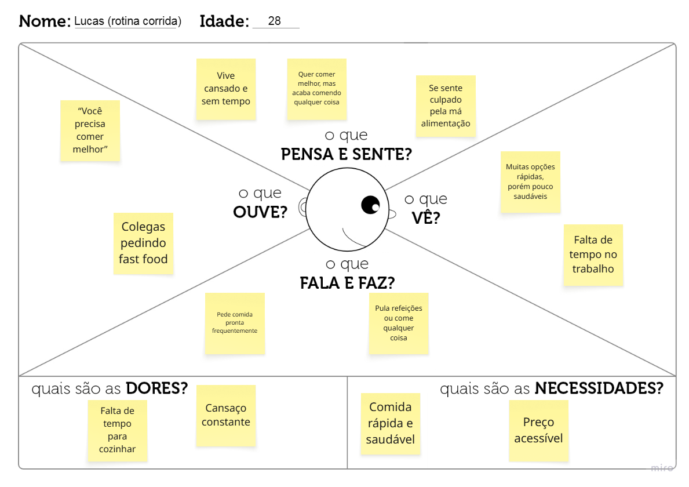
Apresentação do objetivo do projeto e da Matriz CSD, organizando certezas, suposições e dúvidas identificadas.
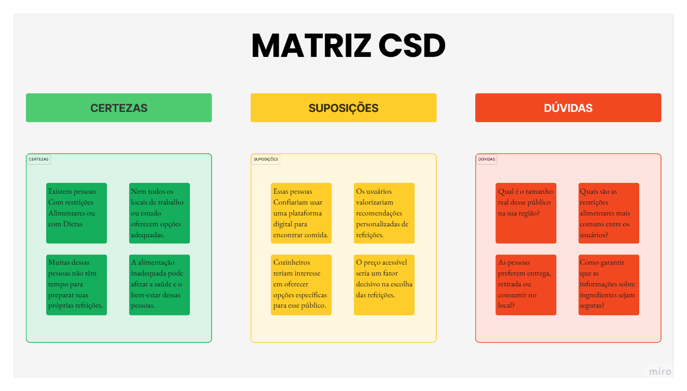
Espaço destinado à descrição do problema definido para orientar o desenvolvimento da solução.
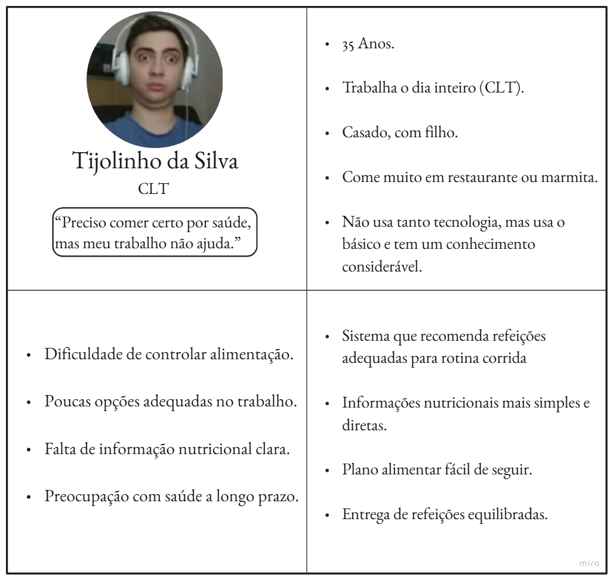
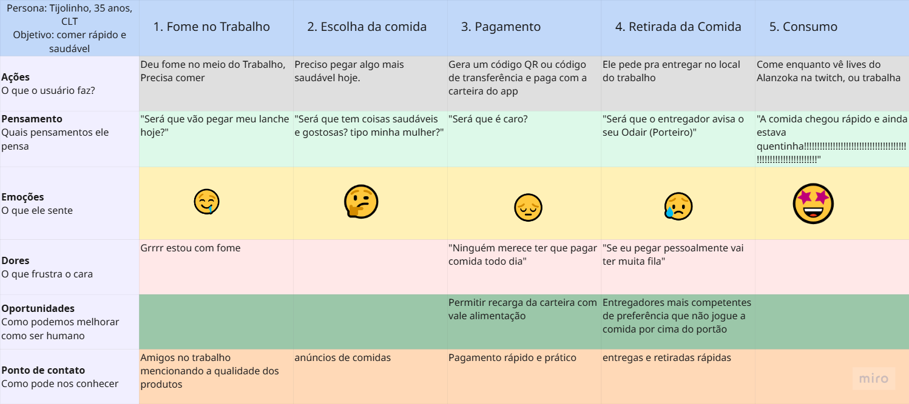
Apresentação das ideias desenvolvidas e das atividades planejadas para transformar as propostas em uma solução.
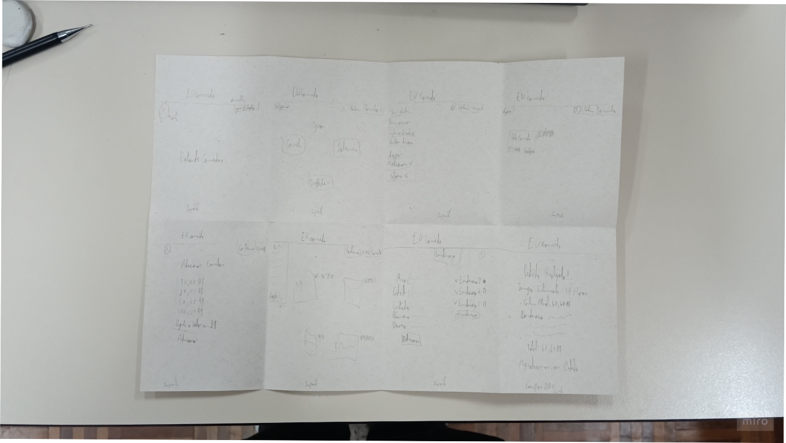
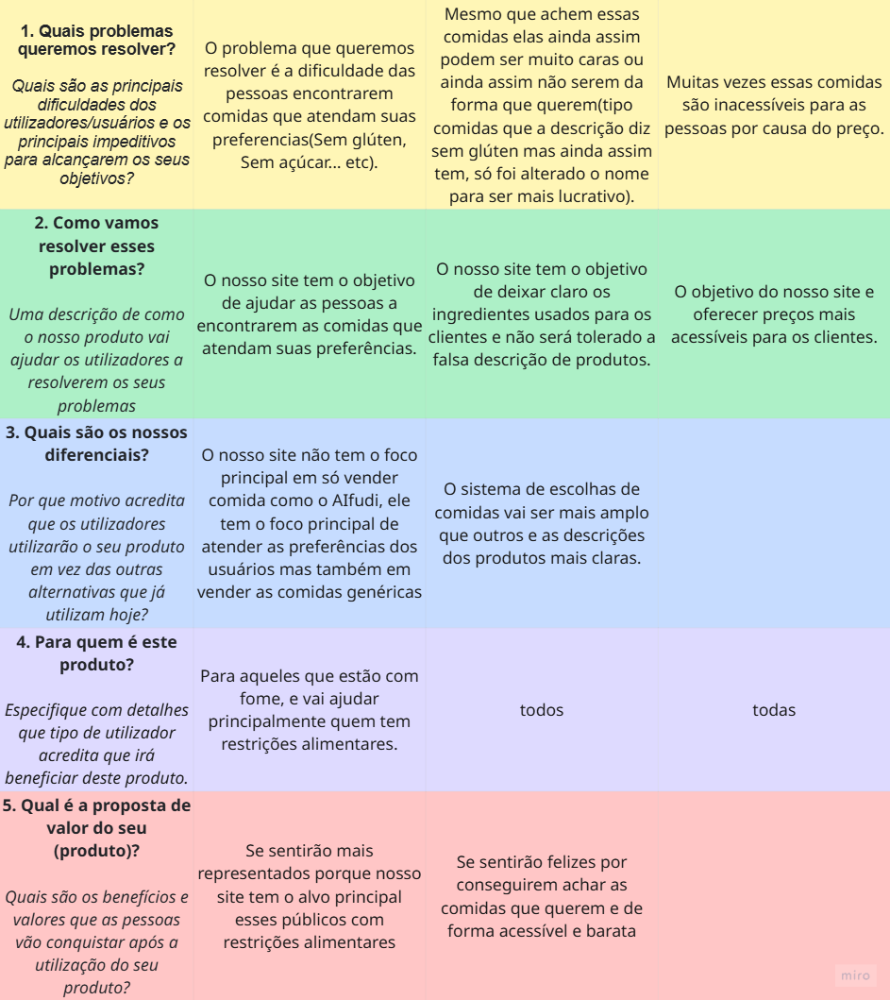
Organização da sequência de ações realizadas pelo usuário e identificação das telas necessárias para o aplicativo.
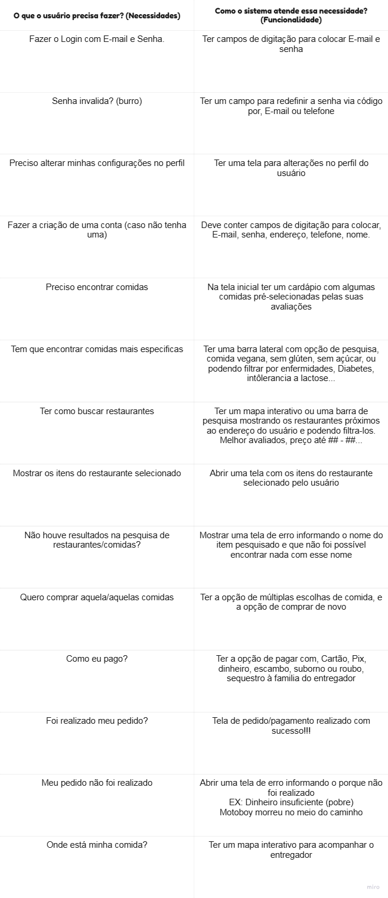
Apresentação dos protótipos desenvolvidos para representar a interface e as funcionalidades propostas para o EUcomida.
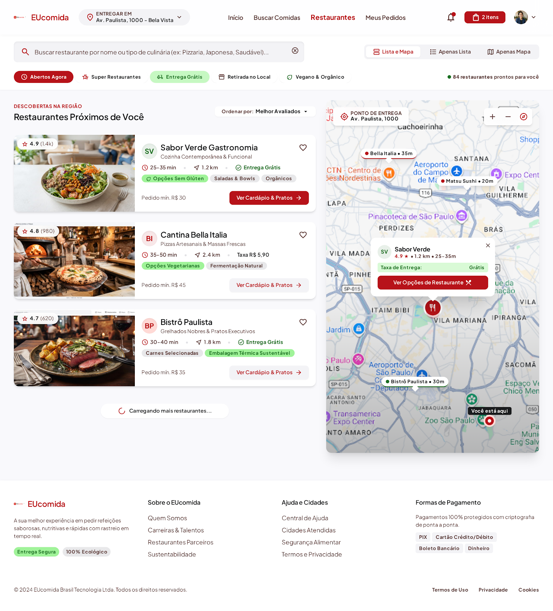
Espaço destinado à apresentação dos testes realizados com usuários para avaliar a facilidade de utilização e identificar possíveis dificuldades.
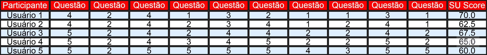
Apresentação dos recursos de acessibilidade considerados no desenvolvimento da interface.
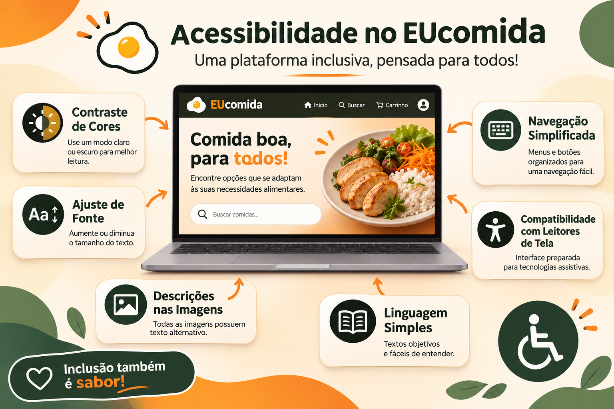
Espaço destinado às considerações finais sobre o desenvolvimento do EUcomida, os resultados alcançados e os aprendizados obtidos durante o projeto.